来源：beebee公园
一堆天真烂漫的小鸡簇拥在一起，沿着传送带往前移动，憧憬着各自的大好前程。
紧接着，它们跌落到旋转的刀片上，瞬间被切得粉碎。
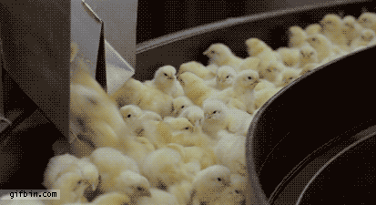
这不是邪典电影中的恶趣味蒙太奇，而是鸡蛋工业背后的残忍现实。
世界各地每天都有数以百万计的小鸡孵化降生。
而由于公鸡不能生蛋，因此在出生的第一天，它们就会被孵化场尽数销毁。
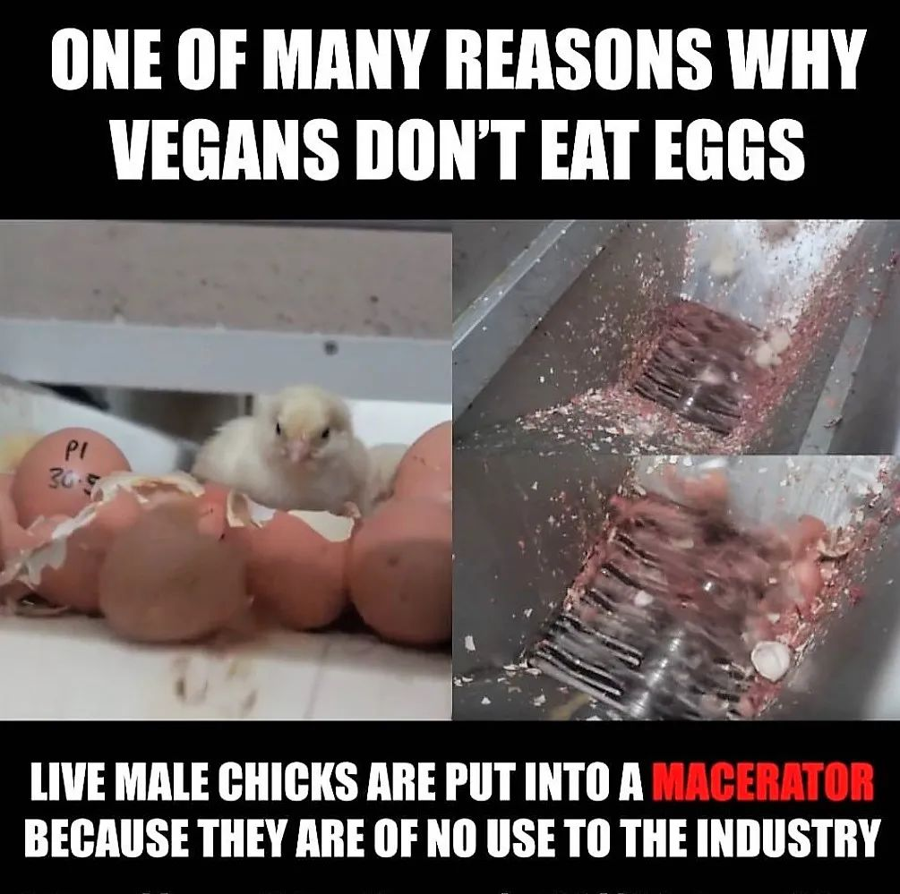
素食主义者不吃鸡蛋的众多原因之一
活的雄性小鸡被投入浸渍机
因为它们对行业没有用
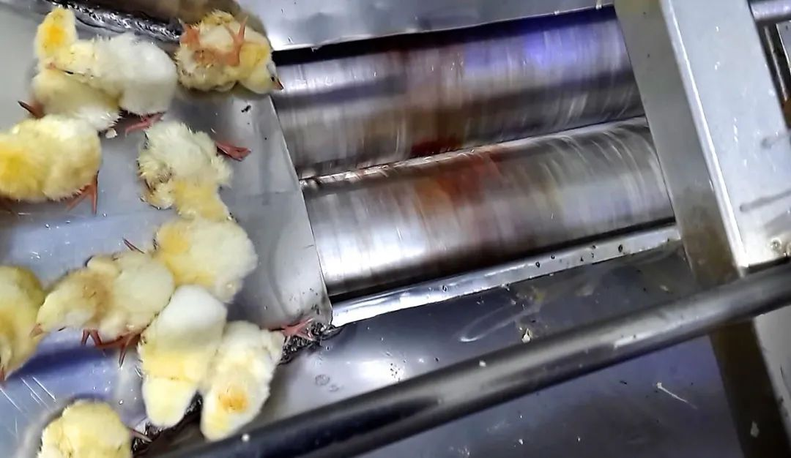
所有的商业蛋场都从工业孵化场购买蛋鸡。
只有小母鸡卖得掉，因此小公鸡对密集养殖工业来讲毫无用处。
它们只能以可怕的方式被淘汰，例如被切碎。
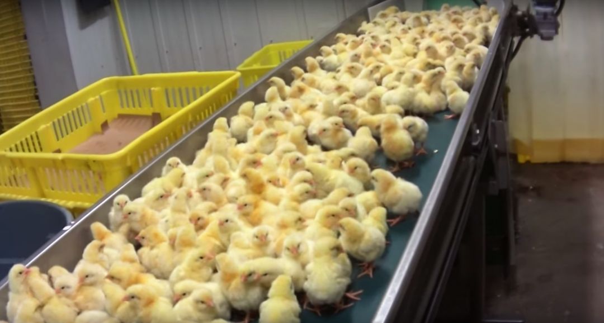
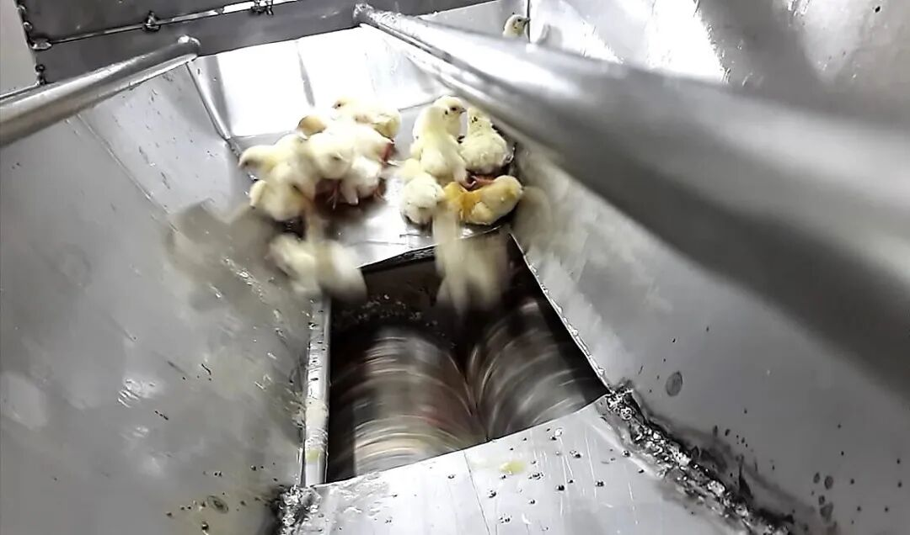
没有比投胎当只公鸡的命运更惨的了。
在全球范围内，每年鸡蛋工业中大约有70亿只雄性小鸡被淘汰。
即使是育种程序中用来让卵受精的种鸡，也被认为对产蛋是多余的，通常在交配后不久就被杀死。
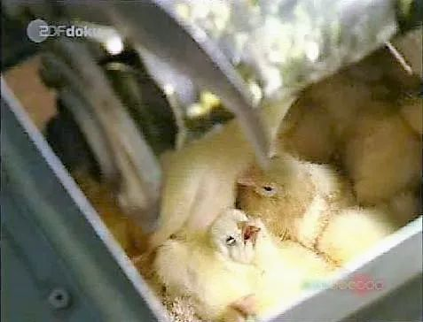
没有任何催眠或麻醉，这些意识清醒又懵懂无知的幼小生灵被送进粉碎机中碾压，撕扯，捣碎，成为模糊的血肉。
在机器无情的刀片之间飞溅着血液，每毫米的推进都带来难以形容的痛苦，直到它们最终死去。
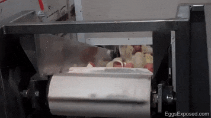
有的小公鸡免于成为废物清除系统中无法辨认的组织。
它们被送到动物园，成为喂食爬行动物和猛禽的活体。
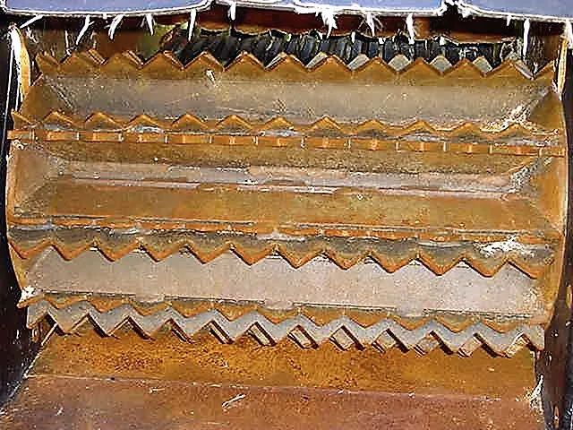
许多人都坚信，自己购买的宠物食品完全来自牛羊的尸体残骸。
然而事实是，用于制造猫粮狗粮的动物成分主要来自鸡蛋工业。
粉碎机中的血液、羽毛、骨头、内脏、腺体……这些孵化场废物被运到提炼设施，变成了农场动物饲料和宠物食品。
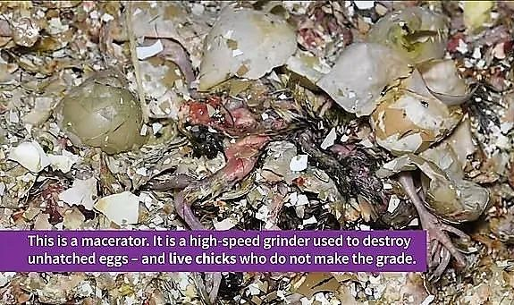
这是一个浸渍机。这是一种高速粉碎机，用于销毁未孵化的鸡蛋-以及不合格的活鸡。
鸡，是一种好奇、有趣的动物。
但它们也是地球上普遍受虐待最严重的动物。
当我们购买动物源性的猫粮狗粮时，我们也在支付用以杀死小公鸡的费用。
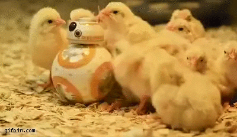
在英国，窒息是销毁小鸡唯一合法的方法。
而在美国，主要使用的方法是粉碎。
美国兽医协会的政策规定：“无用的小鸡、家禽和受精的鸡蛋应通过一种可接受的人道方法予以杀死。例如使用商业设计的粉碎机，导致瞬时死亡。”
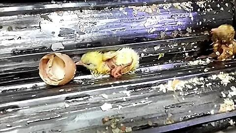
动物福利倡导者坚持认为，目前围绕屠宰鸡肉的许多做法都是不道德的。
同时，不必要地利用和杀死其他有情生物以进行粮食生产，包括雏鸡是错误的。
“这种仅仅为了生产鸡蛋或肉而饲养物种的趋势，把动物当成了简单的无机物。这导致了荒谬的做法，例如切碎活生生的雄性小鸡。”
有人进一步评论说。
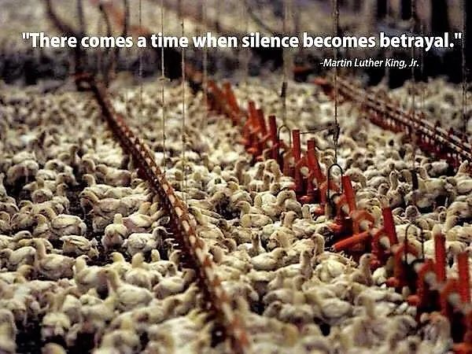
“这是一个沉默就是背叛的时刻。”
——马丁·路德·金
2019年9月，瑞士议会投票决定禁止碎鸡。
但是，使用二氧化碳窒息小鸡的做法仍然合法。
每年，在瑞士杀死大约300万只雄性小鸡。
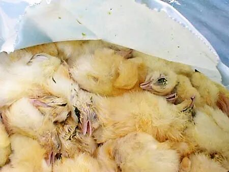
同年10月下旬，法国农业部长迪迪埃·纪尧姆告诉《世界报》：“我们将停止把小鸡切碎，今天已经不再需要了。我是说，到2021年底。”
他进一步指出，这种做法需要逐步淘汰，而不是立即停止：“如果我们立即采取行动，将会发生什么？不再有鸡蛋了。”
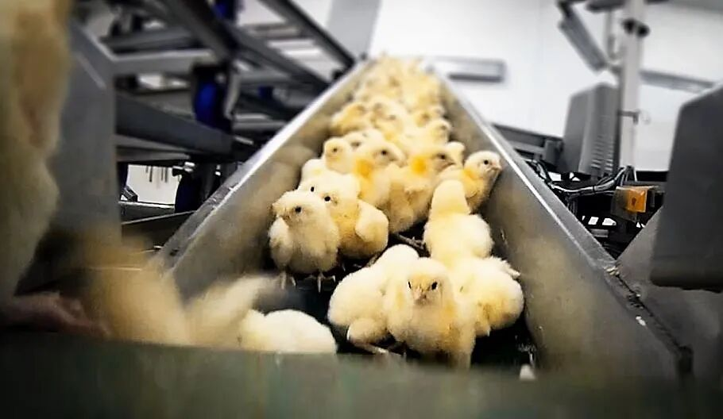
目前，科学家必须刺穿每个鸡蛋来取样，才能测试未孵化雏鸡的性别。
而这在工业级别规模的养殖中显然不具可行性。
根据欧盟法律，切碎小鸡是合法的，只要是瞬时死亡，并且鸡龄小于72小时即可。
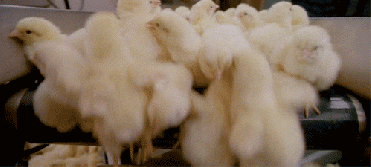
澳大利亚新南威尔士州动物解放组织的艾玛·赫斯特说：“他们一直以来都在向消费者隐藏这个真相。”
她认为，在孵化场中进行粉碎小鸡，意味着你在超市购买的每只鸡蛋都带有血淋淋的残酷性。
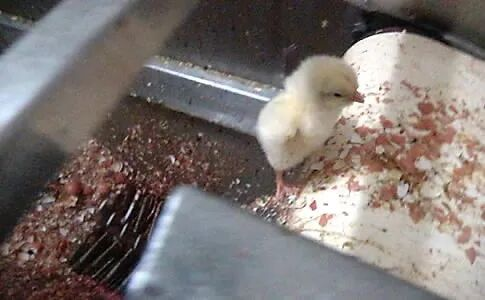
而澳大利亚蛋农协会的约翰·科沃德认为，粉碎不仅是该行业的普遍做法，而且被认为是处置雄性雏鸡最人道的方法。
“预计死亡的瞬间如此之快，因此痛苦也将极其短暂。”
但是他也承认，这个行业无法确定小鸡可能会痛苦多久。
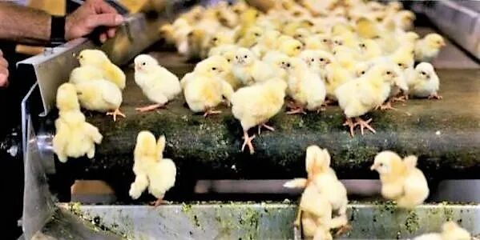
根据《家禽世界》杂志的说法，活禽粉碎的优势在于：“该装置简单易行，价格适中，而且雏鸡不受影响，还可以将之出售给宠物食品行业，尤其是猫食。”
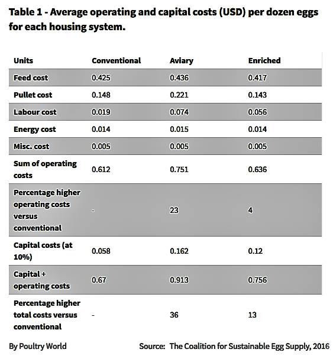
每个鸡舍系统每打鸡蛋的平均运营和资本成本（美元）
而在自然界中，孵化小鸡是一件光荣的成就。
溺爱孩子的母鸡会在翅膀下保护后代，提供温暖和安全。
小鸡会叽叽地叫着和母亲保持亲密，就和你在大型孵化场中听到的那种叫声一样。
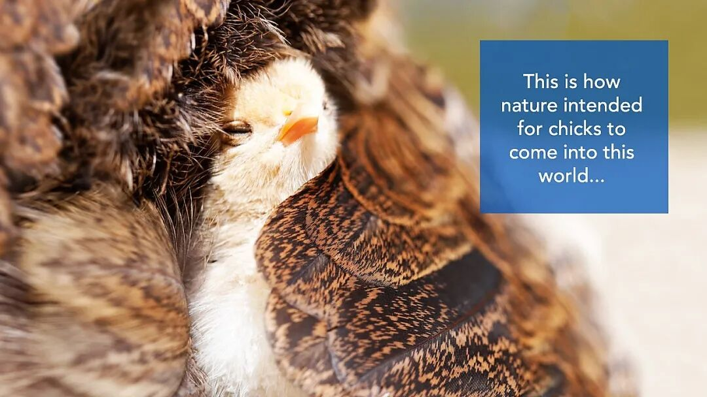
这是大自然打算让小鸡进入这个世界的方式……
不同的是，在机器的噪音下，宝宝的哭声永远不会被它们的妈妈听到。
很少有人见过这些工业托儿所。
因为显而易见，这并不是鸡蛋行业倾向于展示的广告。
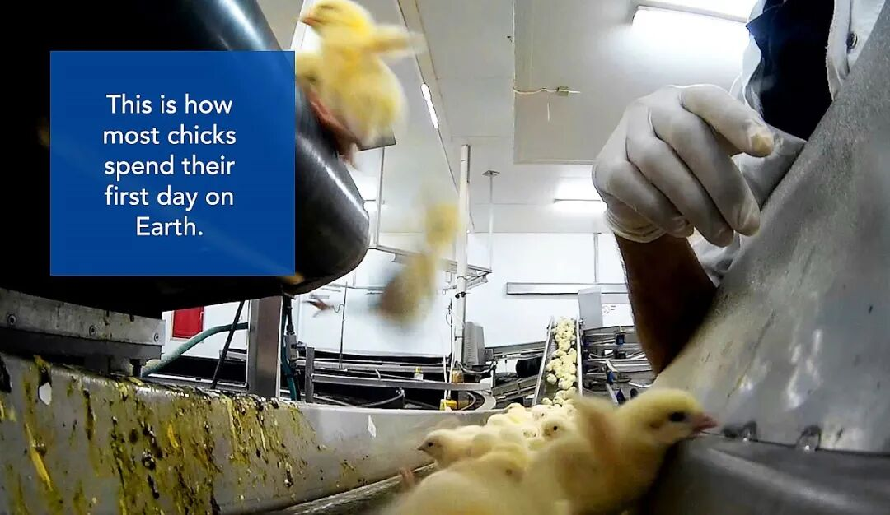
这是小鸡在地球上度过第一天的方式。
对我们来说，幸运的是，这只是一张照片，或一段视频。
但对于那些注定要成为宠物食品的小公鸡来说，这是不可避免的宿命。
一只受惊的一日雏鸡在传送带上恐惧地颤抖着，这使看到的人清楚地意识到一个事实，它是一个有活着的，呼吸着空气，跳动着心脏的生命。
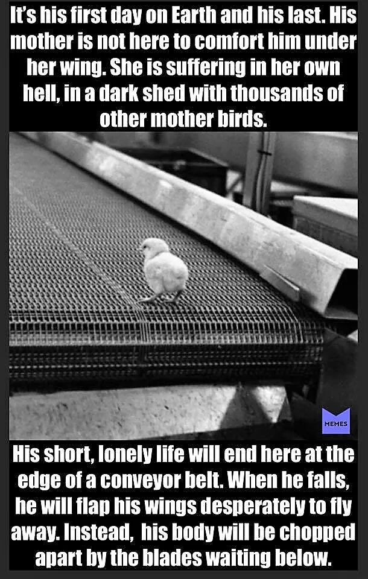
这是他在地球上的第一天，也是他的最后一天。他的母亲不在这里安慰他。她在自己的地狱中受苦，在与其他成千上万只母鸡在一起的黑暗棚子里。
他短暂而孤独的生命将在一条输送带的边缘结束。当他掉落时，他将拼命拍打翅膀飞走。取而代之的是，他的身体将被下面等待的刀片割开。
现在，在发达国家，每人每月吃掉超过2公斤鸡肉，平均每年25公斤。
工业规模养鸡意味着鸡肉便宜。
如果我们在外卖平台上只花十几二十块就能点一整只烤鸡，很显然，这就说明了，这些鸡的生活质量没有得到太多投资。
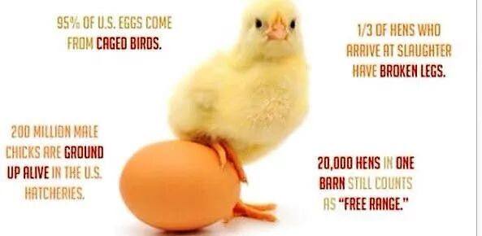
95％的美国鸡蛋来自笼养鸡。
在美国孵化场中有2亿公鸡存活下来。
宰杀的母鸡中有1/3的腿断了。
一个谷仓中的20,000只母鸡仍然算作“自由放养”。
在这个世界，动物和人都要遵守残酷的行业标准。
这是身为食物的它们必须面对的现实，也是作为食肉动物的我们与生俱来的原罪。
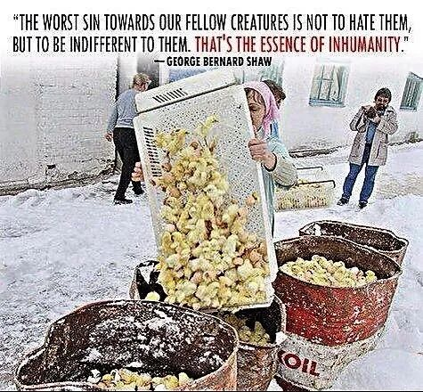
“对我们的同伴最严重的罪过不是恨他们，而是对他们漠不关心。那是不人道的本质。”
——萧伯纳
今日单品推荐
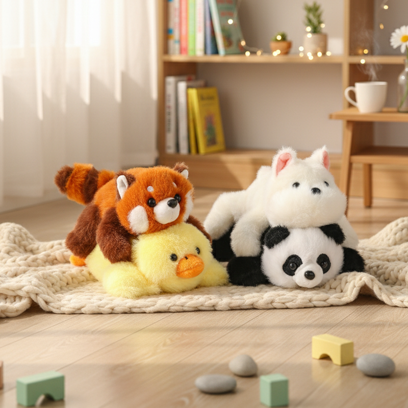
点击下方 立即购买